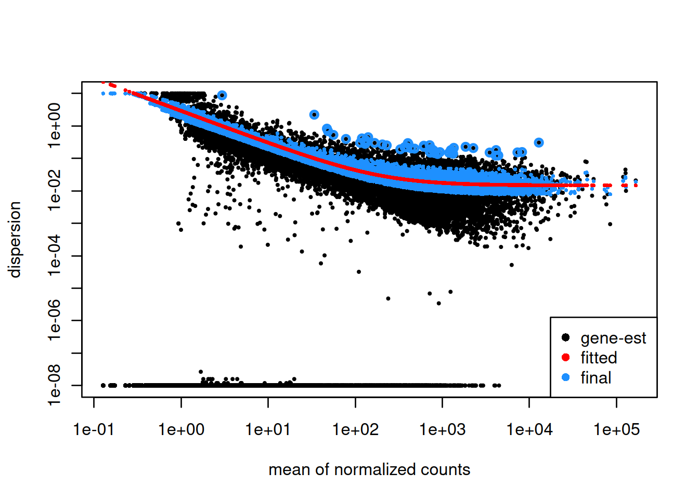

Chapter 5 Differential expression analysis
Learning Objectives
The goal of this chapter is
- to understand the different theorical concepts behind a differential expression analysis
- to provide a real-life example of DE analysis analysis running DESeq2 step-by-step
5.1 Theory behind DESeq2
A large number of computational methods have been developed for differential expression analysis (Seyednasrollah, Laiho, and Elo 2015Seyednasrollah, F, A Laiho, and LA Elo. 2015. “Comparison of Software Packages for Detecting Differential Expression in Rna-Seq Studies.” Brief Bioinform 1 (16): 59. https://doi.org/10.1093/bib/bbt086.), differing slightly in their methodology. Here we will present DESeq2, a widely used bioconductor package dedicated to this type of analysis. For more information read the original paper (Love, Huber, and Anders 2014Love, M, W Huber, and S Anders. 2014. “Moderated Estimation of Fold Change and Dispersion for Rna-Seq Data with Deseq2.” Genome Biology 15 (5): 550–8. https://doi.org/10.1186/s13059-014-0550-8.) and the DESeq2 vignette.
The starting point of the analysis is a count matrix, and the goal is to identify genes that are differentially expressed between samples.
The different steps of the analysis are illustrated in the figure below. Briefly, DESeq2 starts by normalising the raw counts. Then, it estimates the gene-wise dispersions and shrinks these estimates to generate more accurate estimates of dispersion to model the counts. Finally, DESeq2 fits a generalized linear model, performs hypothesis testing and generates a list of differentially expressed genes.

5.1.1 Normalisation
- Why is it mandatory to normalise?
Observed counts are supposed to reflect gene abundance (what we are interested in), however they are also dependent on other less interesting factors such as gene length, sequencing biases, sequencing depth or library composition. Normalisation is the process of scaling raw count values to account for the “uninteresting” factors rendering the expression levels more comparable between and/or within samples.
- Gene length
As illustrated in the example below, gene 1 and gene 2 have similar levels of expression, but many more reads map to gene 2 than to gene 1. This might not be related to biology but it can just reflect the fact that gene 2 is longer. Gene length normalisation is mandatory when the purpose is to compare expression levels between different genes within the same sample. However, for differential expression analysis, as genes expression levels are compared between samples, gene length normalisation is not necessary (and even not recommended). It was just mentioned here for information because many RNAseq common normalisation methods such as TPM (transcript per million), FPKM (fragment per million), or RPKM (reads per million) do normalise read counts by gene length.

- Sequencing depth
Each sequencing experiment will produce a certain number of reads expected to be typically around tens of millions. A fraction of the raw sequencing reads will be discarded during the quality control, the alignment and the counting processes, which implies that the total number of reads for each sample will be different.
As shown in the following example, all genes seem to be expressed at higher levels in sample 1 than in sample 2, but this is likely because sample 1 has twice more reads than sample 2. Accounting for sequencing depth is necessary for differential expression analysis as samples are compared with each other.

- Library composition
The library composition might also be different accross samples. To illustrate this, let’s imagine a basic cell expressing only 2 genes (genes 1 and 2) and assume that a drug treatment induces a strong expression of gene 3. If the normalisation was done using total number of reads only, then the counts of gene 1 would be divided by 15 in control cells, while it would be divided by 165 in treated cells. This would lead to the misleading conclusion that the treatment has reduced 11 times the expression of gene 1. In this case, the library composition has changed but not the expression level of gene 1.

In a real dataset, a few highly differentially expressed genes, differences in the number of genes expressed between samples, or presence of contaminations can skew library composition. Accounting for it is highly recommended for accurate comparison of expression between samples (Anders and Huber 2010Anders, S, and W Huber. 2010. “Differential Expression Analysis for Sequence Count Data.” Genome Biology 11 (27): 10. https://doi.org/10.1186/gb-2010-11-10-r106.).
- DESeq2 normalisation method
DESeq2 will use a normalisation method that takes into account both library size and library composition. To normalise for sequencing depth and RNA composition, DESeq2 uses the median of ratios method:

Let’s try to understand what is behind this formula.
Step 1: DESeq2 creates a pseudo-reference sample by calculating a row-wise geometric mean (for each gene). Geometric mean is used instead of classical mean because it uses log values. It is hence more robust as it is less influenced by extreme values.
Step 2: For every gene in every sample, ratios of counts/pseudo-reference sample are calculated.
Step 3: The median value of all ratios for a given sample is taken as the size factor for that sample. Importantly, the method is based on the assumption that the majority of genes are not differentially expressed, which implies that rare genes that are really up-regulated or down-regulated should not influence the median. Furthermore, the median is calculated skipping genes with a geometric mean of zero. This will hence automatically eliminate genes expressed in some samples but not in others and will help to focus the scaling factor on housekeeping genes.
Step 4: DESeq2 calculates the normalised counts using the scaling factor. This is performed by dividing each raw count values in a given sample by that sample’s scaling factor.

5.1.2 Count modeling
Let’s first have a look at the counts distribution for a typical RNAseq sample:

It is obvious that the count data is not normally distributed. Counts are integer values, always positive, and we observe a large number of genes with low counts (or counts about zero), and a few number of genes with a very high count level.
As seen in the WSBIM1322 course with the example of the coin toss, count data are often modelised by a binomial distribution with parameters n and p where p is the discrete probability distribution of the number of successes in a sequence of n independent experiments. In an RNAseq experiment, p would be the probability of getting a read associated to a particular gene given that n total number of reads were sequenced in the experiment. However, when n is large and p is low, Poisson distribution is used instead of binomial. It describes typically the distribution of a rare event in a large population, which fits better to RNAseq. Indeed, for each sample, the total number of reads tends to be in millions, while the counts per gene can vary considerably but tend to be in tens, hundreds or thousands. Therefore, the chance of a given read to be mapped to any specific gene is extremely small.
The Poisson distribution has only one parameter indicating its expected mean. Its variance and all other properties follow from it. In particular, one key assumption of the Poisson distribution is that the variance equals the mean.
\[K_{ij} \sim P(µ_{ij} = \sigma^2_{ij})\]
Applying a Poisson distribution to Rnaseq counts holds true when comparing technical replicates from a same sample, where the variance only reflects the counting noise. But when comparing biological replicates, counting noise is not the only source of variance. The observed count values for each gene within biological replicates fluctuate more importantly, due to the combination of biological and technical factors: inter-individual variations in gene expression, sample purity, cell reponses to environment (e.g. heat-shock)… Due to this overdispersion, the Poisson distribution doesn’t fit that well to RNAseq counts.
Actually, RNAseq counts are better modelised by an alternative distribution, the negative-binomial. It is derived from the Poisson distribution but the negative-binomial distribution has, in addition to the mean parameter, an extra parameter \(α\) called the “dispersion” parameter to model this “extra” variance that is empirically observed in RNA-Seq experiments.

The dispersion parameter \(\alpha_i\) defines the relationship between the variance of the observed count and its mean value6 Note that as dispersion parameter gets lower and lower, the variance converges to the same value as the mean, and the negative binomial turns into a Poisson distribution..

5.1.3 Dispersion estimation
Having modelised counts by a negative-binomial distribution, next step is to estimate, for each gene, the two parameters of the distribution (mean and dispersion). The mean will be estimated easily from the observed normalised counts in both conditions, but the dispersion is not that trivial to estimate accurately.
Dispersion is a measure of variability in the data (\(α = CV^2\)). A gene with a dispersion value of 0.04 means 20% variation around the expected mean. Estimate the dispersion for each gene would be quite straightforward if we had for each condition, hundreds of replicates. Of course, this is not feasible for economic reasons, and experiments are often done on only 3 replicates. But how to estimate dispersion reliably based on such a little number of samples? To overcome this problem, DESeq2 makes the assumption that genes of similar expression levels have similar dispersions and it will use information coming from other genes expressed at similar level.
Step1: Dispersion for each gene is estimated separately. An initial estimation of dispersion for each gene is first estimated using maximum likelihood estimation. In other words, given the count values of the replicates, the most likely estimate of dispersion is calculated. For each gene, the dispersion estimate is plotted in function of the mean expression level (mean counts of replicates). This produce the so-called “dispersion plot” where each gene is represented by a black dot.

Note that the dispersion plot highlights an intrinsic feature of RNAseq data: genes with low read counts show substantially higher dispersion than highly expressed genes.
Step 2: A curve is fitted to gene-wise dispersion estimates. A curve is fitted (displayed as a red line in the dispersion plot), which represents the estimate for the expected dispersion value for genes of a given expression strength. The idea behind fitting a curve to the data is that different genes will have different scales of biological variability, but, over all genes, there will be a distribution of reasonable estimates of dispersion.
Step 3: Shrinkage of gene-wise dispersion estimates toward the values predicted by the curve. Initial gene-wise dispersion estimates will be shrinked (by an empirical Bayes approach) towards this fitted curve to obtain the final dispersion estimates. The adjusted dispersion values are represented by the blue dots in the dispersion plot. For a certain number of genes, the adjusted dispersion will be significantly increased and this will limit the number of false-positive that could arise from an underestimated dispersion. Dispersion estimates that are slightly above the curve are also shrunk toward the curve. However, genes with extremely high dispersion7 genes with extremely high dispersion are those for which the adjusted dispersion is more than 2 residual standard deviations above the curve. values are not. In fact DESeq2 assumes that these genes might not follow the modeling assumptions and could have higher variability than others for biological or technical reasons. For these genes, shrinking the values toward the curve could result in false positives. These genes are shown surrounded by blue circles in the dispersion plot.
Dispersion shrinkage is particularly important to reduce false positives in the differential expression analysis.

5.1.4 Generalized linear model
DESeq2 fits a generalized linear model of the form: \[log2(q_{ij}) = \Sigma x_j.β_i\]
where \(q_{ij}\) represents the normalised counts for gene i in sample j and \(β_i\) represents the log2FC between conditions. \(β_i\) coefficients are computed from the data.
In the case of a simple design with one condition (a treatment effect for example), the model can be written
\[log2(q_{ij}) = \beta_0 + \beta_1\times x_j + \epsilon\] \(\beta_0\) is the log2 expression level in the reference (control samples)
\(\beta_1\) is the log2FC between treated and control cells
\(x_j\) = 0 if sample j is the control sample
\(x_j\) = 1 if sample j is the treated sample
5.1.5 Hypothesis testing
The logFC are computed from the data using the GLM, and these are associated to standard errors that depend on the variance of the counts.

The ultimate goal of a test for differential expression is to decide whether, for a given gene, an observed difference in read counts is significant, that is, whether it is greater than what would be expected just due to natural random variation.
The null hypothesis \(H_0\) is that there is no differential expression across the sample groups, which is the same as saying that the log2FC = 0. A statistical test, the Wald test, will determine whether the data provides sufficient evidence to conclude that this value is really different from zero.
For the Wald test, the log2 fold-change is divided by its standard error, resulting in a z-statistic. The z-statistic is compared to a standard normal distribution, and a p-value is computed reporting the probability that a z-statistic at least as extreme as the observed value would be selected at random. In principle, if this p-value is small (below a certain cutoff) the null hypothesis is rejected.
5.1.6 Multiple testing correction
Recall that a pvalue of 0.05 means that there is only 5% chance of getting this data if no real difference existed (if \(H_0\) was really true). In other words, choosing a cut off of 0.05 means there is 5% chance that the wrong decision is made (resulting in a false positive). But remember the problematic of multiple testing seen in chapter 7 from WSBIM1322 course.
In a typical RNAseq differential expression analysis, we might have about 20,000 genes to test and usually only a fraction of genes is really differentially expressed. Imagine a drug treatment that modifies the expression of about 1000 genes, but that has no impact on the other ones. The first histogram shows how the distribution of pvalues for truly modified genes (\(H_0\) is false) would look like: most of the pvalues would be very small. Using a pvalue cutoff of 0.05 should permit to identify most of these differentially expressed genes. The second histogram shows the distribution of pvalues for unmodified genes (\(H_0\) is true). Here the p-values are uniformly distributed between 0 and 1, and we can see that 5% of these genes appear to be significant even though this is only by chance as the drug had no real effect on them. But 5% of 19000 genes means … 950 false positive genes! Hence, pvalues obtained from the Wald test must be corrected for multiple testing to avoid excess false positives.
By default DESeq2 uses Benjamini-Hochberg method to adjust pvalues. The third histogram bellow illustrates the principle behind this False discovery rate (FDR) adjustment. As differential expression analysis is done on the whole set of genes, the resulting pvalues will have a distribution corresponding to the combination of both histograms. Most of the p-values are uniformly distributed between 0 and 1 but there is a spike to the left close to zero, due to those p-values for which \(H_0\) is false. The correction approach helps to estimate how many of the significant values are actually false positives. It tries to find the height where the p-value distribution flattens out (corresponding to the red line) and incorporates this height value into the calculation of FDR adjusted p-values.
Choosing a cut off of 0.05 for padjusted values now implies that 5% of significant tests (but not 5% of all tests as before) will result in false positives.

5.1.7 Independent filtering
Multiple testing adjustment tends to be associated with a loss of power. To counteract this effect, one possibility is to filter out those tests from the procedure that have no, or little chance of showing significant evidence, without even looking at their test statistic. Genes with very low counts are typically not likely to be significant due to high dispersion. However, these genes have an influence on the multiple testing adjustment, whose performance improves if such genes are removed. By removing the weakly-expressed genes from the input to the FDR procedure, more significant genes can be found among those that are kept, and this improves the power of the test. This approach is known as independent filtering.
DESeq2 uses as filtering criterion the mean of normalised counts. Genes with a mean expression value under a certain threshold are removed. Such filtering is permissible only if the filter criterion is independent of the actual test statistic, otherwise, the filtering would invalidate the test and consequently the assumptions of the FDR procedure. This is why filtering is done on the average expression over all samples, irrespective of biological condition: this filter is blind to the assignment of samples to the treatment and control group and hence independent.
The mean expression threshold used by DESeq2 for independentfiltering is defined automatically by the software. It is chosen in a way that maximizes the number of genes which will have a significant p-adjusted value. The threshold chosen (the vertical line) is the lowest quantile for which the number of rejections is within 1 residual standard deviation to the peak of the curve.

5.2 Running DESeq2
Let’s start by installing the DESeq2 package.
if (!require("DESeq2"))
BiocManager::install("DESeq2")
library(DESeq2)
library(tidyverse)We will run a DESeq2 analysis using real data.
5.2.1 Construct DESeqDataSet object
Let’s first load the count matrix and the sample metadata. This dataset corresponds to RNAseq data from a cell line treated or not by a siRNA.
load("wsbim2122_data/deseq2/counts.rda")
load("wsbim2122_data/deseq2/coldata.rda")
coldata## Cell Type Condition
## sample1 Cell1 Epithelial mock
## sample2 Cell1 Epithelial mock
## sample3 Cell1 Epithelial mock
## sample4 Cell1 Epithelial KD
## sample5 Cell1 Epithelial KD
## sample6 Cell1 Epithelial KDhead(counts)## sample1 sample2 sample3 sample4 sample5 sample6
## ENSG00000223972 0 0 0 0 0 1
## ENSG00000227232 14 28 17 40 16 13
## ENSG00000278267 8 4 3 1 1 6
## ENSG00000243485 0 0 0 0 0 0
## ENSG00000284332 0 0 0 0 0 0
## ENSG00000237613 0 0 0 0 0 0dim(counts)## [1] 58735 6Using these data, we will start by creating a DESeqDataSet, which is a subclass of RangedSummarizedExperiment used by the DESeq2 package to store the read counts and the intermediate estimated quantities during statistical analysis. The DESeqDataSet class enforces non-negative integer values in the count matrix stored as the first element in the assay list. In addition, a formula which specifies the design of the experiment (the variables that will be used in modeling) must be provided.
dds <- DESeqDataSetFromMatrix(countData = counts,
colData = coldata,
design = ~ Condition)## converting counts to integer mode## Warning in DESeqDataSet(se, design = design, ignoreRank): some variables in
## design formula are characters, converting to factorsdds## class: DESeqDataSet
## dim: 58735 6
## metadata(1): version
## assays(1): counts
## rownames(58735): ENSG00000223972 ENSG00000227232 ... ENSG00000277475
## ENSG00000268674
## rowData names(0):
## colnames(6): sample1 sample2 ... sample5 sample6
## colData names(3): Cell Type ConditionAs for SummarizedExperiments (see chapter 3 from WSBIM1322 course):
- The Quantitative data can be accessed with
assay(). - The sample (columns) metadata can be access with the
colData()function. - The features (rows) metadata can be access with the
rowData()column. - Additional metadata describing the overall experiment can be
accessed with
metadata().
► Question
Access the count data from the dds object and
plot the counts distributions of each sample.
► Solution

5.2.2 Run DESeq2
The standard differential expression analysis steps are wrapped into a single
function DESeq(). This function will automatically run the following other functions:
estimateSizeFactors()(estimation of size factors)estimateDispersions()(estimation of dispersion)nbinomWaldTest()(Negative Binomial GLM fitting and Wald statistics)
dds <- DESeq(dds)## estimating size factors## estimating dispersions## gene-wise dispersion estimates## mean-dispersion relationship## final dispersion estimates## fitting model and testing5.2.3 PCA
Before anything else, a good practice is to explore the data and perform quality controls checks.
It is highly recommended to starts by a PCA to assess overall similarity between the samples:
Which samples are similar/different to each other?
Does this fit to the expectation from the experiment’s design?
Are they any sample outliers which may need to be explored further?
► Question
Here are 3 examples of PCAs that correspond to different experimental designs. How would you interprete these PCAs and what impact could they have on the analysis?


Remember that if one performs PCA directly on a matrix of normalised read counts,
the result typically depends only on the few most strongly expressed genes because
they show the largest absolute differences between samples. A simple and often used
strategy to avoid this is to take the logarithm of the normalised count values plus
a small pseudocount; however, now the genes with low counts tend to dominate the
results because, due to the strong Poisson noise inherent to small count values, they
show the strongest relative differences between samples. As a solution, DESeq2 offers
the regularized-logarithm transformation rlog()8 For genes with high counts, the rlog transformation differs not much from
an ordinary log2 transformation. However for genes with lower counts, the transformation
moderates the variance across the mean shrunking the values towards the genes’ averages
across all samples. See ?rlog for more details about the function..
rld <- rlogTransformation(dds)► Question
Pick a gene highly expressed and a gene lowly expressed and inspect the effect of the rlog transformation
► Solution
The plotPCA() function can then be used on the transformed counts to generate a PCA.
plotPCA(rld, intgroup = "Condition")
Note that the argument returnData = TRUE can be used to obtain a dataframe of PC1 and PC2
for custom plotting.
pca_data <- plotPCA(rld, intgroup = "Condition", returnData = TRUE)
pca_data## PC1 PC2 group Condition name
## sample1 -9.255547 2.574003 mock mock sample1
## sample2 -14.268017 -1.047978 mock mock sample2
## sample3 -8.216937 -1.328574 mock mock sample3
## sample4 10.591838 4.149401 KD KD sample4
## sample5 10.398083 -2.087520 KD KD sample5
## sample6 10.750579 -2.259333 KD KD sample6ggplot(pca_data, aes(x = PC1, y = PC2, color = Condition, label = name)) +
geom_point() +
geom_text()
5.2.4 Inspecting size factors
It is also advisable to investigate any systematic bias in the sequencing data, such as
whether one sample has been sequenced more deeply than others. One can extract size factors
using the sizeFactors() function.
Usually these size factors should vary around 1, indicating comparable sequencing depth.
sizeFactors(dds)## sample1 sample2 sample3 sample4 sample5 sample6
## 0.7268826 1.3086639 1.0773676 0.9660247 1.0421106 1.0126638► Question
Compare Size Factors to sequencing depth.
► Solution

5.2.5 Dispersion plot
Plotting the dispersion estimates is a useful diagnostic. This dispersion plot is typical, with the final dispersion, estimates shrunk from the gene-wise estimates towards the fitted estimates.
plotDispEsts(dds)
5.2.6 DESeq2 results
The resultsNames() function gives the names of results that can be extracted.
Note that by default, R will choose a reference level for factors based on alphabetical
order. Here KD condition was hence set arbitrarily as the reference level. This means
that the fold changes evaluated for every gene will correspond to their expression level
in mock cells versus their expression level in KD cells.
resultsNames(dds)## [1] "Intercept" "Condition_mock_vs_KD"dds$Condition## [1] mock mock mock KD KD KD
## Levels: KD mockIn this case, it seems more logical to use mock cells as reference. Reference levels can be changed using the relevel( ) function. But in this case don’t forget to re-run DESeq() function after the re-leveling operation.
dds$Condition <- relevel(dds$Condition, ref = "mock")
dds <- DESeq(dds)
resultsNames(dds)## [1] "Intercept" "Condition_KD_vs_mock"Results can then be extracted using the results()function.
The name parameter must be an element of resultsNames(object) specifying the
the samples to compare.
Note that the contrast argument of results() can also be used to
extract results of interest. In this case, the two following commands will give the same
results9 Using the name argument is however necessary to extract specific
coefficients from more complex designs..
res <- results(dds,
name = "Condition_KD_vs_mock")res <- results(dds,
contrast = c("Condition", "KD", "mock"))Let’s inspect the results and their signification.
res_tbl <- as_tibble(res, rownames = "ENSEMBL")
res_tbl## # A tibble: 58,735 x 7
## ENSEMBL baseMean log2FoldChange lfcSE stat pvalue padj
## <chr> <dbl> <dbl> <dbl> <dbl> <dbl> <dbl>
## 1 ENSG00000223972 0.165 0.964 4.08 0.236 0.813 NA
## 2 ENSG00000227232 21.0 0.296 0.540 0.548 0.583 0.741
## 3 ENSG00000278267 4.13 -1.04 1.14 -0.906 0.365 0.556
## 4 ENSG00000243485 0 NA NA NA NA NA
## 5 ENSG00000284332 0 NA NA NA NA NA
## 6 ENSG00000237613 0 NA NA NA NA NA
## 7 ENSG00000268020 0 NA NA NA NA NA
## 8 ENSG00000240361 0 NA NA NA NA NA
## 9 ENSG00000186092 0 NA NA NA NA NA
## 10 ENSG00000238009 3.49 -1.69 1.22 -1.39 0.165 NA
## # … with 58,725 more rowsbaseMean: The average of the normalised count values taken over all samples.
log2FoldChange: Fold-change between the comparison and control groups, reported on a logarithmic scale to base 2. In this case, as we are testing the “Condition_KD_vs_mock” coefficient, positive log2FC indicates a gene up-regulated in the KD condition compared to the mock condition, while a negative log2FC indicate a down-regulation.10 DESeq2 offers further options to shrink LFC estimates. This is useful for ranking and visualization (see DESeq2 vignette for more information).
lfcSE: The standard error estimate for the log2FoldChange estimate
stat: The value of the test statistic for the gene
pvalue: The pvalue of the test for the gene
padj: pvalue adjusted for multiple testing
► Question
Inspect the results table and identify the 5 “best genes” showing the lowest padjusted value.
Calculate the mean expression level of these 5 “best genes” using the function
counts(). Compare with baseMean values.Extract the ß coefficient of these 5 “best genes” from the GLM using the function
coefficient(). Compare with log2FoldChange values.Using the function
counts(), evaluate the mean expression levels of these 5 “best genes” in mock cells. Compare with ß coefficients.Evaluate the mean expression levels of these 5 “best genes” in KD cells. Compare with ß coefficients.
How many genes have no padjusted value? Why?
► Solution
5.2.7 Independent filtering exploration
The filtering threshold that has been used to filter low count genes can be extracted from the results metadata.
metadata(res)$filterThreshold## 71.69224%
## 4.103008This means that genes whith basemean < 4.1030081 have been filtered. This represents 71.69224% of all tested genes!
Remember that the filtering threshold has been fixed in a way that maximizes the number of genes which will have a significant padjusted value.
We can plot the number of rejections over the basemean quantiles. The threshold chosen (red vertical line) is the lowest quantile for which the number of rejections is within 1 residual standard deviation to the peak of the curve.
as_tibble(metadata(res)$filterNumRej) %>%
ggplot(aes(x = theta, y = numRej)) +
geom_point() +
geom_vline(xintercept = 0.7169,
color = 'red')
► Question
Actually many of these genes would have been filtered anyway because their
basemean == 0. Evaluate how many genes were really filtered by the independent filtering procedure.Re-run the results() function on the same dds object, but set the independent filtering parameter to FALSE. Check how many genes have no padj?
Imagine another way of filtering genes with very low counts
► Solution
5.2.8 p-values distribution
Another useful diagnostic plot is the histogram of pvalues. It can give you an immediate idea of the proportion of genes differentially expressed, (the taller the is the left peak, the more p-values are close to 0 and therefore significant). Furthermore, it gives an idea of how the test behaved across all your hypotheses, and immediately diagnoses some potential problems.
hist(res_tbl$pvalue)
► Question
What do you think about the this pvalues histogram?
► Solution

5.2.9 MA plot
Another interesting plot is the MA-plot (“Mean-Average” plot), a scatter plot of log2FC versus the mean of normalised counts. Genes with a padjusted value lower than 0.05 are colored. The plot highlights the fact that genes with low read counts show substantially higher variability than highly expressed genes, resulting in a strong log2FC even though are likely not really differentially expressed. In the MA-plot, we hope to observe some genes located in the upper/lower right quadrant of the plots (the most interesting candidates).
plotMA(res)
5.2.10 Volcano plot
Drawing a volcano-plot is also informative to have a global view on the results. Recall that the most interesting features are those towards the top corners given that they have small pvalues and large fold-changes.
res_tbl %>%
filter(!is.na(padj)) %>%
ggplot(aes(x = log2FoldChange, y = -log10(padj),
color = padj < 0.05 & abs(log2FoldChange) > 1)) +
scale_colour_manual(values = c("gray", "red")) +
geom_point(size = 0.5) +
geom_hline(yintercept = -log10(0.05)) +
geom_vline(xintercept = 1) +
geom_vline(xintercept = -1)
5.2.11 Raw counts plots
It may be also useful to check the validity of the analysis by simply assessing the expression levels of the most highly differentially expressed genes.
best_genes <- res_tbl %>%
arrange(padj) %>%
head(6)
as_tibble(counts(dds[best_genes$ENSEMBL, ], normalize = T),
rownames = 'ENSEMBL') %>%
gather(sample, counts, -ENSEMBL) %>%
left_join(as_tibble(coldata, rownames = "sample")) %>%
ggplot(aes(x = sample, y = counts, fill = Condition)) +
geom_bar(stat = 'identity', color = "gray30") +
facet_wrap( ~ ENSEMBL, scales = "free", ncol = 3) +
theme(axis.text.x = element_text(size = 7, angle = 90),
axis.title.x = element_blank(),
legend.position = "right",
legend.text = element_text(size = 7),
legend.title = element_text(size = 7))## Joining, by = "sample"
► Question
- Identify and inspect counts of the genes plotted in red in the following volcano-plot. These genes have a very large log2FC (|log2FC| > 5) but are far from bearing the lowest padjusted value (their padjusted value is between 0.05 and 1e-5).

Compare counts with previous counts plots (counts of genes with lowest pvalues). what is the most striking?
Using dispersions() function, compare dispersion values for both group of genes
► Solution

5.2.12 Querying the Biomart service
The result table only uses Ensembl gene IDs, but gene names may be more informative. Bioconductor’s biomaRt package can help with mapping various ID schemes to each other.
Below, we query the Biomart service to extract the gene names
(enternal_gene_name) and ENTREZ gene identifiers (entrezgene_id)
(that we will need in the next chapter) and join these to our result
data.
library("biomaRt")
library("org.Hs.eg.db")
## Load homo sapiens ensembl dataset
mart <- useDataset("hsapiens_gene_ensembl", useMart("ensembl"))
## Attributes define the values we are interested to retrieve.
## listAttributes(mart)
ensembl_to_geneName <- getBM(attributes = c("ensembl_gene_id", "external_gene_name",
"entrezgene_id"),
mart = mart)
names(ensembl_to_geneName) <- c("ENSEMBL", "gene", "ENTREZID")
head(ensembl_to_geneName)## ENSEMBL gene ENTREZID
## 1 ENSG00000210049 MT-TF NA
## 2 ENSG00000211459 MT-RNR1 NA
## 3 ENSG00000210077 MT-TV NA
## 4 ENSG00000210082 MT-RNR2 NA
## 5 ENSG00000209082 MT-TL1 NA
## 6 ENSG00000198888 MT-ND1 4535res_tbl <- res_tbl %>%
left_join(ensembl_to_geneName) %>%
arrange(padj)## Joining, by = "ENSEMBL"res_tbl## # A tibble: 58,935 x 9
## ENSEMBL baseMean log2FoldChange lfcSE stat pvalue padj gene
## <chr> <dbl> <dbl> <dbl> <dbl> <dbl> <dbl> <chr>
## 1 ENSG00… 1209. -4.67 0.178 -26.2 8.24e-152 1.37e-147 PGRM…
## 2 ENSG00… 277. 6.25 0.351 17.8 6.25e- 71 5.20e- 67 ZBED2
## 3 ENSG00… 630. 2.24 0.154 14.6 3.32e- 48 1.84e- 44 NUDT…
## 4 ENSG00… 220. 4.29 0.300 14.3 2.20e- 46 9.16e- 43 CST6
## 5 ENSG00… 2692. 2.05 0.144 14.2 5.64e- 46 1.88e- 42 YWHAH
## 6 ENSG00… 381. 2.33 0.171 13.6 3.45e- 42 9.55e- 39 THG1L
## 7 ENSG00… 506. 2.53 0.191 13.2 8.45e- 40 2.01e- 36 EMP2
## 8 ENSG00… 193. 3.44 0.271 12.7 7.18e- 37 1.49e- 33 STEA…
## 9 ENSG00… 1419. 3.00 0.240 12.5 6.39e- 36 1.18e- 32 ST3G…
## 10 ENSG00… 6134. 2.18 0.178 12.2 2.26e- 34 3.76e- 31 ITGB8
## # … with 58,925 more rows, and 1 more variable: ENTREZID <int>Below, we store these results and the DESeqDataSet object for in the
next chapter.
saveRDS(dds, file = "./data/dds.rds")
saveRDS(res_tbl, file = "./data/res_tbl.rds")
saveRDS(ensembl_to_geneName, file = "./data/ensembl_to_geneName.rds")Page built: 2020-10-04